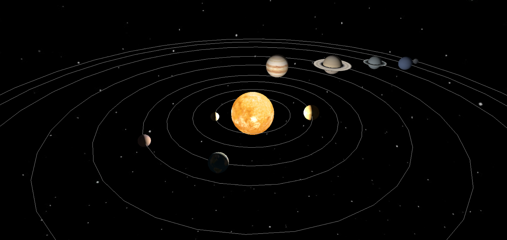
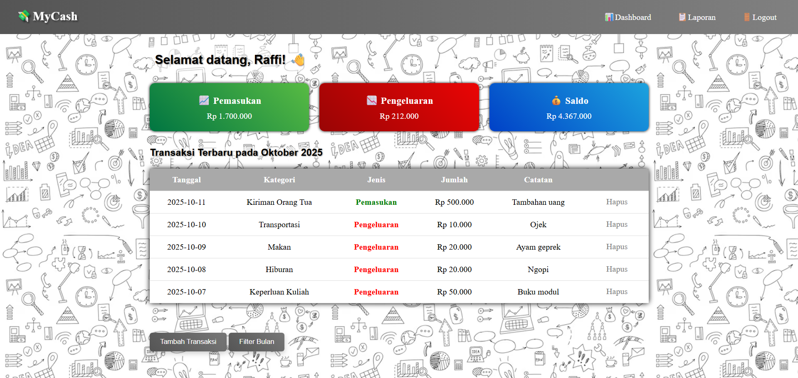

Selamat Datang
Computer Science Student
Mahasiswa Informatika yang berfokus pada pengembangan web, komputer grafik, dan kecerdasan buatan untuk menciptakan pengalaman digital yang efektif, menarik, dan bernilai bagi pengguna.
Saya adalah mahasiswa informatika yang memiliki minat besar di bidang teknologi, terutama dalam pengembangan web, komputer grafik 2D/3D, dan kecerdasan buatan (AI).
Saya telah mengerjakan berbagai proyek, seperti simulasi tata surya berbasis WebGL, sistem pakar untuk diagnosis penyakit, dan web keuangan interaktif. Melalui proyek-proyek tersebut, saya berusaha menggabungkan kemampuan teknis dengan tampilan yang menarik dan mudah digunakan.

Simulasi interaktif sistem tata surya dengan orbit planet, bulan, tooltip hover, dan panel kontrol kecepatan rotasi dan revolusi.
Sistem pakar berbasis Forward Chaining dengan Confidence Factor untuk diagnosis penyakit demam berdarah, flu, dan COVID-19.

Web untuk mengelola keuangan dengan dashboard total pemasukan, pengeluaran bulanan, serta sisa saldo dari keseluruhan.
Saya selalu terbuka untuk bertukar ide, berdiskusi, maupun menjalin kolaborasi dalam bidang teknologi. Jangan ragu untuk menghubungi saya!